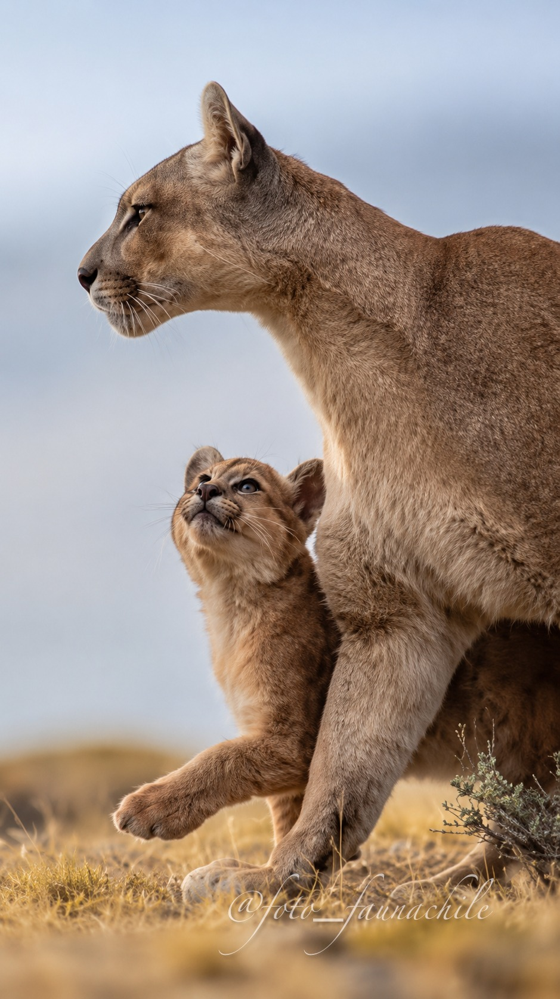

Un felino adaptable
Puede vivir en ambientes muy diferentes, desde bosques y montañas hasta estepas abiertas. En Patagonia utiliza grandes extensiones de territorio.

ESTEPA Y MONTAÑA
Puma concolor
Una presencia silenciosa y poderosa que forma parte del equilibrio natural de la Patagonia.
Explora 3 datos del puma ↓CONOCE AL PROTAGONISTA
El Puma es el mayor felino de la Patagonia. Su capacidad de adaptación le permite desplazarse por ambientes muy distintos y pasar inadvertido incluso en paisajes abiertos. Es una especie clave dentro de las relaciones naturales del ecosistema.
DESCUBRE LA ESPECIE
Puede vivir en ambientes muy diferentes, desde bosques y montañas hasta estepas abiertas. En Patagonia utiliza grandes extensiones de territorio.
Como depredador, ayuda a regular poblaciones de presas y forma parte de las relaciones que mantienen el equilibrio ecológico.
Aunque su distribución continental es extensa, enfrenta amenazas locales como la pérdida y fragmentación del hábitat y los conflictos con la ganadería. Su situación puede variar según la región.
SONIDOS DE LA PATAGONIA
Aunque suele asociarse al silencio, el puma utiliza distintas vocalizaciones para comunicarse. Escucha aquí uno de sus registros.
AURA TEXTIL
Esta fotografía forma parte del origen visual de Patagonia Salvaje: fauna real de la Patagonia transformada en una propuesta textil que invita a mirar con más atención nuestro entorno.
EXPERIENCIA QR
El producto te invita a conocer y descubrir más sobre cada especie.
← Volver a Los protagonistas